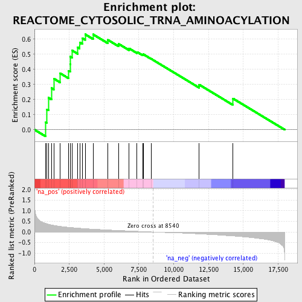
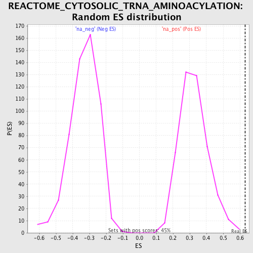

| | | Dataset | GSEA_Cushing_prerank_FC |
| Phenotype | NoPhenotypeAvailable |
| Upregulated in class | na_pos |
| GeneSet | REACTOME_CYTOSOLIC_TRNA_AMINOACYLATION |
| Enrichment Score (ES) | 0.6326036 |
| Normalized Enrichment Score (NES) | 1.9409171 |
| Nominal p-value | 0.0 |
| FDR q-value | 0.00550799 |
| FWER p-Value | 0.097 |
Table: GSEA Results Summary

Fig 1: Enrichment plot: REACTOME_CYTOSOLIC_TRNA_AMINOACYLATION
Profile of the Running ES Score & Positions of GeneSet Members on the Rank Ordered List
| PROBE | GENE SYMBOL | GENE_TITLE | RANK IN GENE LIST | RANK METRIC SCORE | RUNNING ES | CORE ENRICHMENT | | 1 | YARS | | | 809 | 0.408 | 0.0485 | Yes |
| 2 | CARS | | | 881 | 0.392 | 0.1345 | Yes |
| 3 | IARS | | | 1006 | 0.366 | 0.2117 | Yes |
| 4 | GARS | | | 1218 | 0.333 | 0.2764 | Yes |
| 5 | EPRS | | | 1386 | 0.313 | 0.3388 | Yes |
| 6 | NARS | | | 1852 | 0.265 | 0.3738 | Yes |
| 7 | FARSB | | | 2456 | 0.224 | 0.3916 | Yes |
| 8 | TARS | | | 2562 | 0.217 | 0.4355 | Yes |
| 9 | AARS | | | 2574 | 0.216 | 0.4846 | Yes |
| 10 | EEF1E1 | | | 2699 | 0.209 | 0.5257 | Yes |
| 11 | PPA1 | | | 3108 | 0.186 | 0.5457 | Yes |
| 12 | RARS | | | 3250 | 0.178 | 0.5787 | Yes |
| 13 | LARS | | | 3436 | 0.169 | 0.6073 | Yes |
| 14 | AIMP2 | | | 3642 | 0.160 | 0.6326 | Yes |
| 15 | SARS | | | 4211 | 0.136 | 0.6322 | No |
| 16 | DARS | | | 5265 | 0.098 | 0.5960 | No |
| 17 | QARS | | | 6046 | 0.073 | 0.5692 | No |
| 18 | VARS | | | 6795 | 0.051 | 0.5393 | No |
| 19 | MARS | | | 7365 | 0.035 | 0.5157 | No |
| 20 | KARS | | | 7791 | 0.022 | 0.4971 | No |
| 21 | HARS | | | 7820 | 0.021 | 0.5005 | No |
| 22 | AIMP1 | | | 8386 | 0.005 | 0.4702 | No |
| 23 | FARSA | | | 11831 | -0.090 | 0.2990 | No |
| 24 | WARS | | | 14267 | -0.188 | 0.2066 | No |
Table: GSEA details [plain text format]

Fig 2: REACTOME_CYTOSOLIC_TRNA_AMINOACYLATION: Random ES distribution
Gene set null distribution of ES for REACTOME_CYTOSOLIC_TRNA_AMINOACYLATION